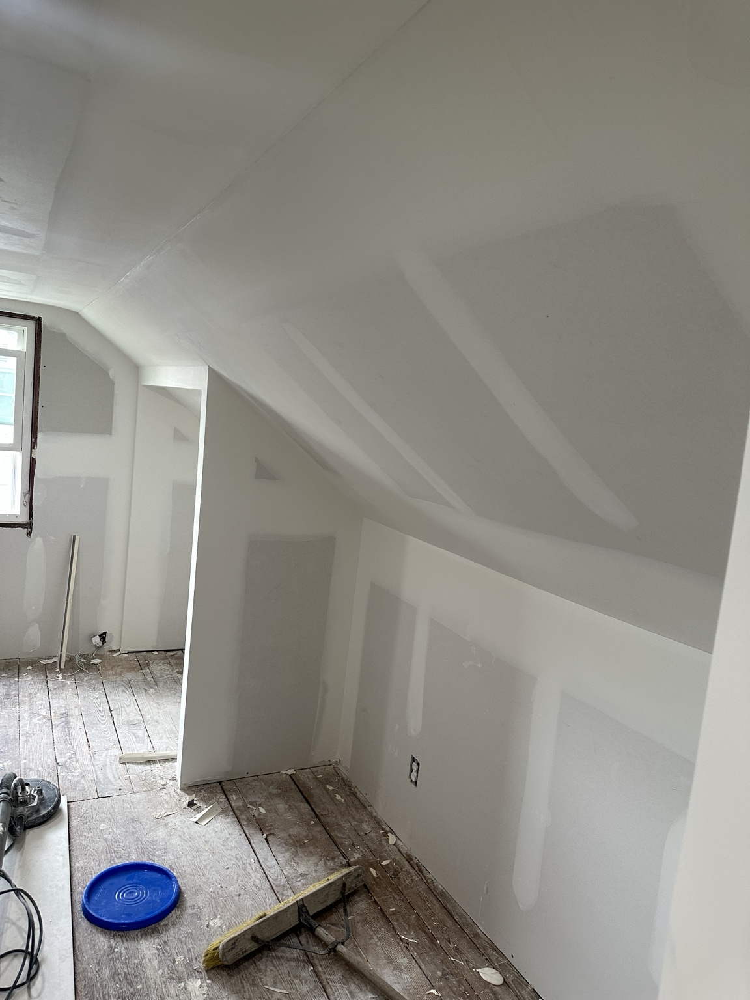

Gloucester Township is a large Camden County municipality covering communities including Blackwood, Erial, Sicklerville, and Chews Landing - a broad mix of housing from 1960s ranches to 1990s subdivisions spread across Route 42, the Black Horse Pike, and the roads off Sicklerville Road. The variety of construction eras means drywall repair calls here cover a wide range: older ranches with original ceiling seam failures, 1980s colonials with nail pop patterns, and newer construction where a poor original finish is starting to crack. South Jersey Repairs serves Gloucester Township homeowners and landlords across all of these communities.
Call NowText PhotosFree Drywall Quote
Fastest quote: text 2-3 photos, your town, and whether it is wall damage, ceiling damage, water damage, or a hole patch.

Call or text photos for a free drywall repair quote.
Drywall Repair for Gloucester Township Homes and Properties
Because Gloucester Township covers such a large area with varied housing ages, we see a wide range of drywall issues. Ranch homes from the 1960s in Blackwood often have low ceilings with original tape seams that have dried and cracked over 50-plus years. Colonials from the 1980s and 1990s in Sicklerville and Erial show the typical nail pop and ceiling crack pattern common in framing from that era. Newer construction in the eastern parts of the township sometimes has thin original finish coats that crack along butt joints where the drywall panels meet.
We assess each job based on the specific wall system and construction era before recommending an approach - rather than treating every repair the same way.
Ranch Home Ceiling Seam Repair
Original tape seam failures in 1960s Blackwood and Chews Landing ranch ceilings. Re-tape, compound, and smooth finish.
Nail Pop Repair in 1980s-1990s Colonials
Standard nail pop and ceiling crack repair in Sicklerville and Erial subdivisions.
Rental Turnover Drywall
Gloucester Township has significant rental inventory. We handle move-out punch lists and landlord repair lists across all communities in the township.
Gloucester Township Drywall Repair FAQ
Do you serve all parts of Gloucester Township including Blackwood and Sicklerville?
Yes. Gloucester Township covers a large area and we serve all of its communities - Blackwood, Erial, Chews Landing, Sicklerville, and the neighborhoods off Route 42 and the Black Horse Pike.
Gloucester Township and Nearby Areas
We serve Gloucester Township and nearby South Jersey areas including Washington Township, Deptford, Berlin, Winslow Township, and Turnersville. This page is written specifically for Gloucester Township drywall repair searches.
Real Drywall Repair Photos
Drywall patching

Finishing and sanding
Related South Jersey Repairs Services
Main Drywall Repair PageHandyman ServicesFence RepairTV MountingProperty MaintenanceContact / Quote Page
Need Drywall Repair in Gloucester Township, NJ?
Call or text photos for a free drywall repair quote. Include your town, a few photos of the damaged wall or ceiling, and whether you need drywall repair, ceiling repair, hole patching, water damage drywall repair, drywall installation, or drywall finishing.
Call 609-316-8126Text PhotosRequest Quote
South Jersey Repairs
South Jersey Repairs specializes in drywall repair and also provides handyman services, fence repair, TV mounting, and property maintenance across Gloucester Township and nearby South Jersey areas.